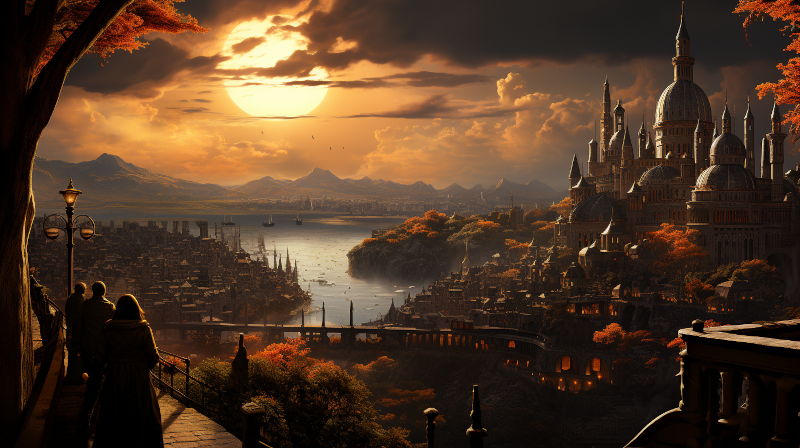

Ponte Cidade

Figure 1: The great city of Ponte Cidade
Nestled at the junction of two continents, Ponte Cidade is a bustling metropolis that serves as a bridge between cultures, economies, and ideas. Renowned for its strategic location, the city straddles the vital Caolas Céid strait, commonly referred to as “Sruthán” by locals. This critical waterway links the northern and southern oceans while also separating the lands of the Gran Imperio from the Elven realms, making Ponte Cidade an indispensable hub for trade and diplomacy.
From its cobblestone streets to its expansive bazaars filled with exotic goods from distant shores, Ponte Cidade is a melting pot of history and modernity. Although a few miles south of the city lies the prestigious University of Naethanor, Ponte Cidade itself is home to various guilds that continue to preserve the diverse traditions of Naurrnen.
The city’s cosmopolitan nature is not just the result of its human and Elven populations; communities of Dwarves, Adama, and even some reclusive Hallashim dwell here, each contributing to its rich cultural tapestry. Here, scholars from surrounding regions seek ancient texts, merchants barter for precious stones and rare spices, and diplomats negotiate the fate of nations.
As you traverse Ponte Cidade, you’ll feel the pulse of Naurrnen beneath your feet and witness a narrative crafted by the convergence of civilizations. Welcome to Ponte Cidade, the crossroads of a world balancing between the enigmas of its past and the promises of its future.